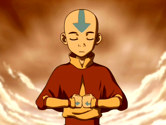
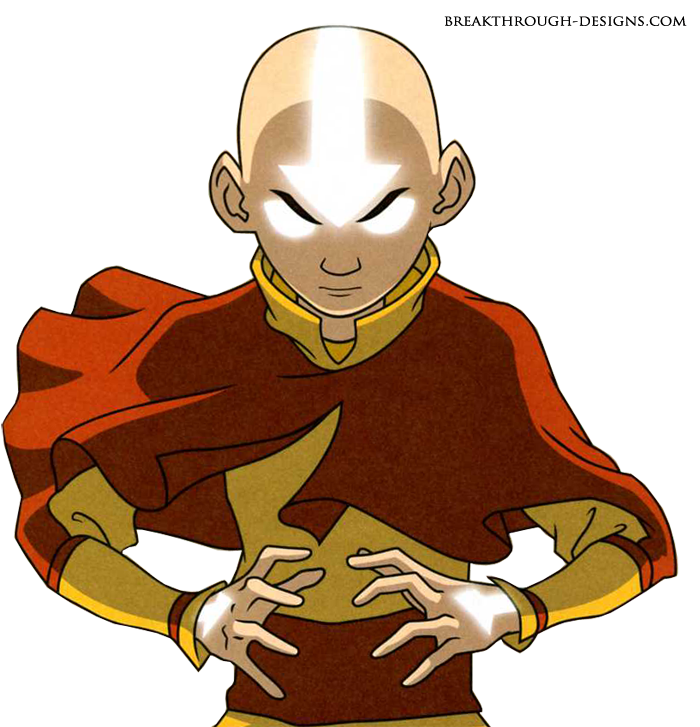

Es el protagonista de la serie. Es un niño de 112 años (ya que cuando tenía 12 años quedó encerrado durante 100 años en un iceberg).
Es el último maestro aire que queda, ya que fue el único sobreviviente del exterminio de los Nómadas del Aire que llevó a cabo el ejército del Señor del Fuego Sozin (quien empezó la guerra) cien años atrás para evitar que el próximo avatar naciera entre ellos (ese sería Aang).El destino de Aang como Avatar es dominar los cuatro elementos: el Aire, el Agua, la Tierra y el Fuego y restaurar el equilibrio del mundo.
Como Avatar, es el puente entre el mundo Físico y el de los Espíritus. El Agua, la aprendió de Pakku (un maestro agua de la Tribu Agua del Norte) y Katara. La Tierra, la aprendió de Toph, y el fuego, lo aprendió de Zuko.
 |
 |  |
Soka |
Katara |
Toph |
Suko |